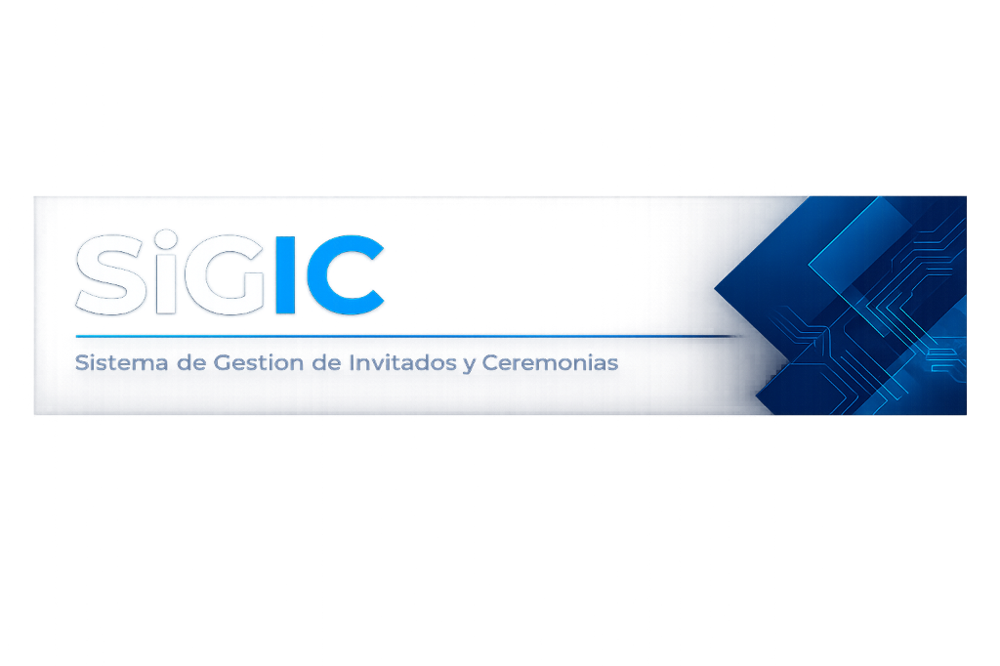

INSTITUTO TECNOLÓGICO BELTRÁN
Tecnicatura Superior en Analista de Sistemas
Práctica Profesionalizante · Proyecto Institucional de Graduación
SiGIC
MANUAL DE USUARIO Y GUÍA OPERATIVA COTIDIANA
Padrón de Egresados, Despacho Masivo de Invitaciones, Asignación Interactiva de Asientos en Anfiteatro y Acreditación de Ingreso mediante Códigos QR y Protocolo de Contingencia
Equipo de Proyecto y Desarrollo
Escaneá para ver el manual interactivo en línea
1. Introduccion y Proposito del Sistema
FundamentosEl Sistema de Gestion Institucional de Colaciones (SiGIC) es una plataforma integral desarrollada para resolver y automatizar la complejidad logistica de los actos de colacion de grado del Instituto Tecnologico Beltran.
El sistema conecta en tiempo real tres grandes pilares operativos:
Panel Administrativo Web
Permite crear ceremonias, cargar el padron de egresados desde planillas Excel, despachar invitaciones por correo y diseñar el mapa de butacas del anfiteatro.
Portal del Graduado
Autogestion segura sin contraseñas engorrosas mediante enlaces de un solo uso (OTP/Token). Confirma asistencia, inscribe acompañantes y genera la credencial QR.
App Movil de Porteria
Aplicacion en Flutter para los telefonos del personal de ingreso. Escanea credenciales digitales en menos de 500 ms con validacion acustica y visual.
Arquitectura Sin Friccion
Toda la plataforma opera sobre servicios en la nube de alta disponibilidad (Vercel Serverless, PostgreSQL con conexión segura SSL y canal de parches Shorebird OTA), garantizando que las butacas y las acreditaciones esten sincronizadas segundo a segundo sin margen de duplicacion.
14. Ficha Técnica Institucional y Créditos de Proyecto
Créditos OficialesInstituto Tecnológico Beltrán
Tecnicatura Superior en Analista de Sistemas · Práctica Profesionalizante · Ciclo Lectivo 2026
Equipo de Análisis y Desarrollo del Proyecto
| Integrante | Rol y Especialidad | Carrera y Sede |
|---|---|---|
| Cancelo Julian | Analista de Sistemas & Desarrollador Fullstack | Analista de Sistemas · ITB Avellaneda |
| Alfonso Alan Alexis | Analista de Sistemas & Documentación Técnica | Analista de Sistemas · ITB Avellaneda |
| Contreras Villalba Sol Heilin | Analista de Sistemas & Relevamiento de Procesos | Analista de Sistemas · ITB Avellaneda |
| Frassia Matias | Analista de Sistemas & Control Operativo de Ceremonia | Analista de Sistemas · ITB Avellaneda |
| Santillan Luis Gabriel | Analista de Sistemas & Auditoría de Calidad y Seguridad | Analista de Sistemas · ITB Avellaneda |
Stack Tecnológico Completo de la Plataforma
Canales Institucionales y Soporte
Validez y Certificación Operativa
Este documento constituye el manual técnico formal y la guía operativa de capacitación para las autoridades directivas, personal administrativo, cuerpo docente y equipo de portería del Instituto Tecnológico Beltrán para la gestión y realización de colaciones de grado institucionales.
14. Ficha Tecnica Institucional
Créditos OficialesInstituto Tecnologico Beltran
Practica Profesionalizante · Proyecto Final de Graduacion
Validez y Soporte del Documento
Este documento constituye el manual formal y de capacitacion operativa para las autoridades, directivos, administrativos y personal de porteria del Instituto Tecnologico Beltran para la realizacion de ceremonias institucionales de colacion.